Où sont passés quatre millions de personnes ?
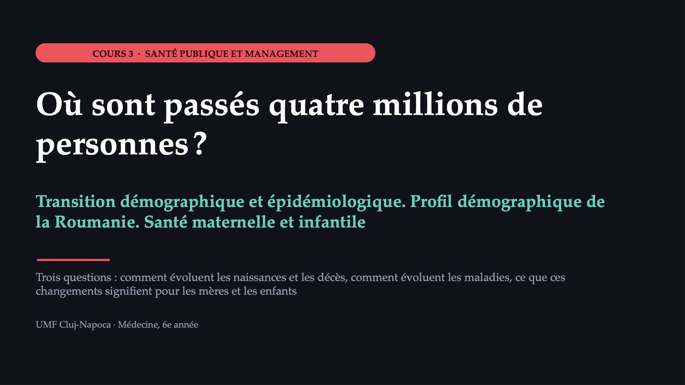
1 / 45Combien d’habitants compte la Roumanie ?
2 / 4523 211 395
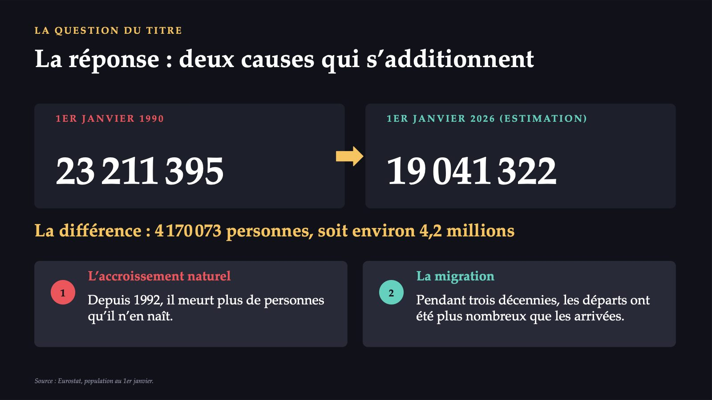
3 / 45Qu’est-ce qui change dans votre liste de patients ?
![BINÔMES · 3 MINUTES AVANT TOUT CONCEPT, UN CAS Qu’est-ce qui change dans votre liste de patients ? Vous êtes médecin de famille dans une commune rurale où, depuis dix ans, il naît de moins en moins d’enfants, et où une partie des jeunes travaille à l’étranger. Notez trois changements que vous attendez dans dix ans et une mesure que vous pouvez prendre dès maintenant. Trois minutes en binômes, puis deux réponses en salle. La liste est conservée : les concepts qui suivent expliquent pourquoi les patients changent.](diapozitive/C03/004.jpg) 4 / 45
4 / 45La transition démographique : quatre étapes
![NOUVEAU TERME 1 La transition démographique : quatre étapes Le passage de beaucoup de naissances et beaucoup de décès à peu de naissances et peu de décès. 1 toutes deux élevées la mortalité fluctue au gré des épidémies et des famines 2 la mortalité baisse l’écart se creuse, la population augmente rapidement 3 la natalité baisse l’écart se resserre 4 toutes deux faibles population plus âgée, à peu près stationnaire, fécondité au seuil de remplacement Schéma, sans valeurs. Corail : la natalité. Noir : la mortalité. D’après Omran et Lesthaeghe ; ce qui vient après la quatrième étape ne fait pas partie du modèle classique.](diapozitive/C03/005.jpg) 5 / 45
5 / 45−
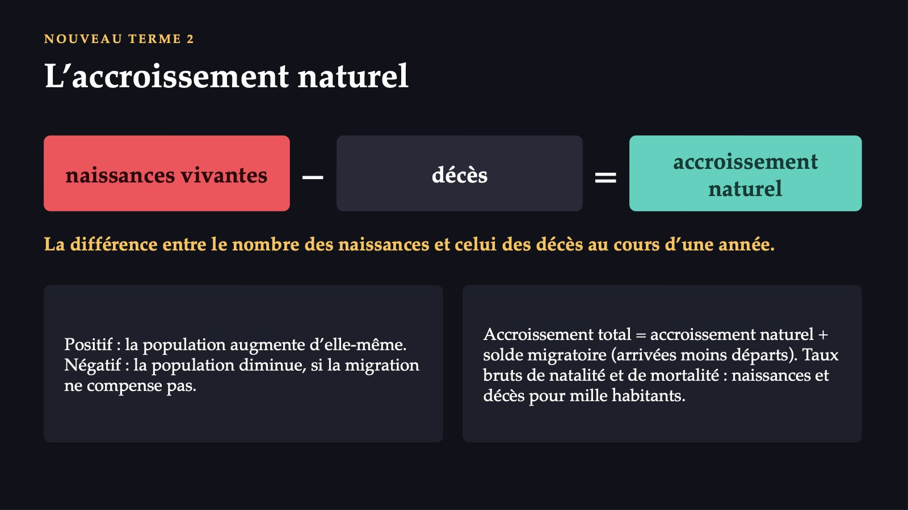
6 / 45Indice synthétique de fécondité de la Roumanie, 1990–2024
![COMBIEN D’ENFANTS A, EN MOYENNE, UNE FEMME Indice synthétique de fécondité de la Roumanie, 1990–2024 UE, 2024 : 1,34 remplacement des générations : un peu plus de 2 1,83 1990 1,27 2002 1,75 2022 1,39 2024 Indice synthétique de fécondité : nombre moyen d’enfants qu’aurait une femme si elle avait, à chaque âge, la fécondité d’une année. En 2024, la Roumanie (1,39) n’a pas une fécondité inférieure à la moyenne européenne (1,34). Le problème vient de la combinaison avec l’émigration et la mortalité. Source : Eurostat, indice synthétique de fécondité ; les valeurs des trois dernières années sont des estimations.](diapozitive/C03/007.jpg) 7 / 45
7 / 45Le modèle n’est pas une loi
![LES LIMITES DU MODÈLE Le modèle n’est pas une loi TROIS VARIANTES, D’APRÈS OMRAN classique : en environ deux siècles accélérée : le Japon retardée : la mortalité n’a baissé qu’au siècle dernier Le modèle ne dit pas combien de temps durent les étapes, ne garantit pas que la natalité baisse et n’inclut pas la migration. SECONDE TRANSITION · LESTHAEGHE, VAN DE KAA La fécondité reste sous le seuil de remplacement, le mariage est retardé, les valeurs changent. 23,6 → 27,2 ans âge moyen à la première naissance, 2000 → 2024 (UE 2024 : 29,9) 32,1 % naissances hors mariage, 2024 (UE : 41,1 %)](diapozitive/C03/008.jpg) 8 / 45
8 / 45A · 1967
 9 / 45
9 / 45Depuis 1992, il meurt plus de personnes qu’il n’en naît
10 / 45Omran : trois stades de la transition épidémiologique
![LA TRANSITION ÉPIDÉMIOLOGIQUE · OMRAN, 1971 Omran : trois stades de la transition épidémiologique 1 L’âge des épidémies et des famines mortalité élevée et fluctuante, vie courte 2 L’âge du recul des pandémies les pics épidémiques se raréfient, la mortalité baisse 3 L’âge des maladies dégénératives et de celles produites par l’homme les maladies chroniques deviennent les principales causes de décès Les plus grands bénéfices : les enfants et les jeunes femmes, les plus vulnérables aux infections et aux risques de la grossesse. La transition épidémiologique va de pair avec la transition démographique et interagit avec les facteurs démographiques, économiques et sociaux.](diapozitive/C03/011.jpg) 11 / 45
11 / 45Les maladies chroniques apparaissent à des âges de plus en plus avancés
![APRÈS OMRAN Les maladies chroniques apparaissent à des âges de plus en plus avancés LE QUATRIÈME STADE · OLSHANSKY ET AULT, 1986 Les maladies dégénératives ne disparaissent pas, mais elles tuent à des âges de plus en plus avancés. L’espérance de vie continue d’augmenter, même si les causes de décès restent les mêmes. LA SYNTHÈSE DE 2014 · SANTOSA ET COLL. Omran lui-même a reconnu par la suite un, et peut-être deux, nouveaux stades. Dans le quatrième, l’espérance de vie continue d’augmenter. Le cinquième, avec des maladies nouvelles et la réapparition de maladies anciennes, avait déjà été décrit par d’autres auteurs. Ces extensions ne sont pas développées dans le cours.](diapozitive/C03/012.jpg) 12 / 45
12 / 45Qu’est-ce qui décrit le mieux le quatrième stade de la transition épidémiologique ?
 13 / 45
13 / 45Les maladies dégénératives tuent à des âges de plus en plus avancés
14 / 4554,0 %
![LA ROUMANIE AU STADE DES MALADIES CHRONIQUES Appareil circulatoire : plus de la moitié des décès 54,0 % des 244 061 décès de 2023 sont dus aux maladies de l’appareil circulatoire. Premières places de la charge de morbidité (DALY) : la cardiopathie ischémique et l’accident vasculaire cérébral. 21,5 % probabilité qu’un adulte de 30 ans meure avant 70 ans d’un cancer, d’une maladie cardiovasculaire, du diabète ou d’une maladie respiratoire chronique (2021). Suite au cours 4. Sources : Eurostat, 2023 ; OMS, 2021 (ODD 3.4.1) ; GBD.](diapozitive/C03/015.jpg) 15 / 45
15 / 451967 : les naissances doublent presque en un an
 16 / 45
16 / 45118
![CAS CONSTRUIT POUR LA DISCUSSION Une nuit d’hiver, à la fin des années 80 LA GARDE Une femme de trente-cinq ans, mère de quatre enfants, arrive à l’hôpital de comté avec de la fièvre, des douleurs abdominales et des saignements, après une intervention faite à domicile. Le médecin de garde reconnaît une complication qu’il voit presque chaque semaine. MORTALITÉ MATERNELLE · ROUMANIE, 1990 118 décès maternels pour 100 000 naissances vivantes, estimation de l’Organisation mondiale de la santé pour 1990. Le cas illustre, à l’échelle d’une garde, ce que signifie ce niveau. Source : OMS, série estimée. Le cas est construit pour la discussion.](diapozitive/C03/017.jpg) 17 / 45
17 / 45La natalité baisse, puis la mortalité la dépasse
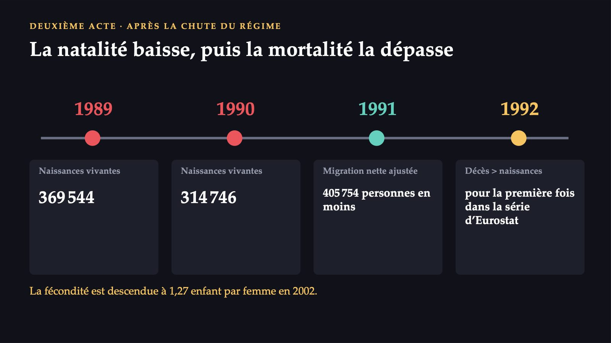
18 / 4527,2 %
![TROISIÈME ACTE · L’EUROPE ET L’ÉMIGRATION Le bilan de l’année 2024 Naissances vivantes 143 637 Décès 244 575 Solde migratoire +76 513 Accroissement naturel, 2024 moins 100 938 taux : moins 5,3 pour mille (UE : moins 2,8) 27,2 % les naissances de 2024, par rapport à celles de 1967 En 2025 : 134 238 naissances (provisoire). Le solde inclut un ajustement statistique et ne dit pas qui arrive : Roumains qui reviennent, étrangers, corrections des registres. Source : Eurostat, bilan démographique (demo_gind).](diapozitive/C03/019.jpg) 19 / 45
19 / 45Espérance de vie à la naissance, 2024
 20 / 45
20 / 45Trois types de pyramide des âges
![LIRE UN GRAPHIQUE, SANS CALCULS Trois types de pyramide des âges Expansive (progressive) base la plus large, se rétrécit régulièrement vers le sommet : chaque génération qui naît est plus nombreuse que la précédente Stationnaire barres presque égales jusqu’aux âges avancés : le nombre des naissances est resté à peu près le même d’une génération à l’autre Constrictive (régressive) base plus étroite que le milieu : les enfants nés ces dernières années sont moins nombreux que la génération de leurs parents Schémas, sans valeurs ; les types de la fiche de la discipline et du travail pratique 2, où l’on construit la pyramide à partir des données d’un comté.](diapozitive/C03/021.jpg) 21 / 45
21 / 45Laquelle de ces trois pyramides est celle de la Roumanie d’aujourd’hui ?
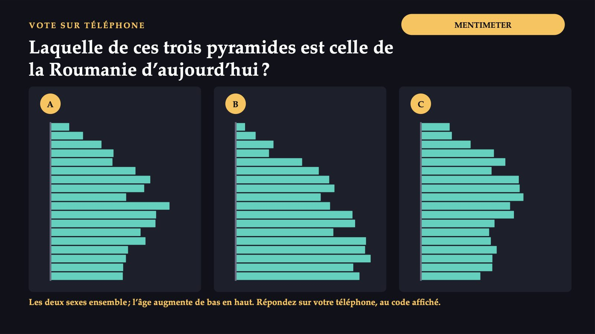
22 / 45La pyramide d’aujourd’hui : constrictive, avec des irrégularités
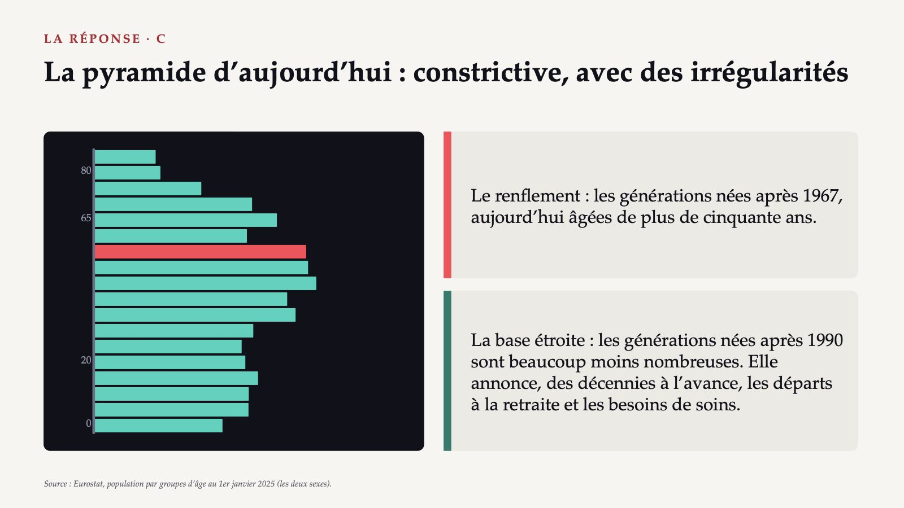
23 / 45La Roumanie par rapport à l’Union européenne
![LE VIEILLISSEMENT DE LA POPULATION · 2025 La Roumanie par rapport à l’Union européenne Roumanie UE Personnes de 65 ans et plus 20,3 % 22,0 % Personnes de 80 ans et plus 4,5 % 6,2 % Âge médian 44,1 ans 44,9 ans Rapport de dépendance des personnes âgées 31,6 34,5 Pas plus âgée que la moyenne européenne, mais elle vieillit vite. Les personnes de 65 ans et plus représentaient 10,3 % en 1990. Rapport de dépendance des personnes âgées : 15,6 en 1990, 31,6 en 2025. Source : Eurostat (demo_pjanind). Rapport de dépendance des personnes âgées (appelé aussi taux de dépendance) : personnes de 65+ pour cent personnes de 15–64 ans.](diapozitive/C03/024.jpg) 24 / 45
24 / 45131,3
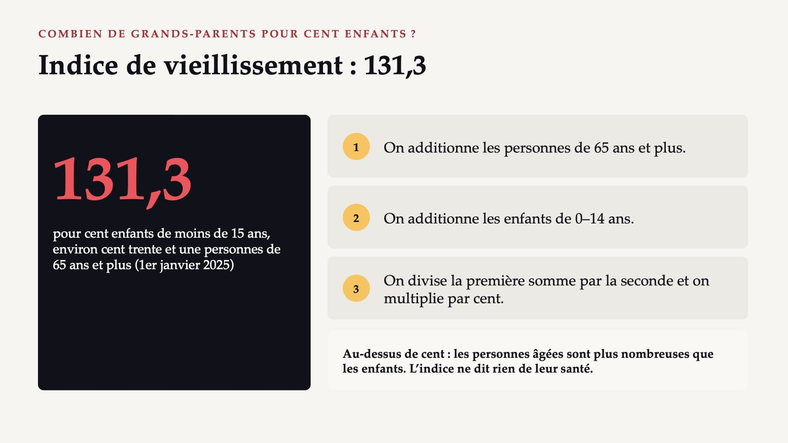
25 / 45Plus de personnes âgées, moins de personnes actives
![CONSÉQUENCES POUR LES SERVICES DE SANTÉ Plus de personnes âgées, moins de personnes actives Les patients plusieurs maladies à la fois, plus de médicaments, soins de longue durée Le financement moins de personnes actives cotisent ; une partie des aidants informels travaille à l’étranger Les spécialités plus de médecine de famille, de gériatrie, de soins palliatifs, de réadaptation ; la pédiatrie et l’obstétrique, avec moins de patients, mais des exigences plus élevées L’image « 4-2-1 » (quatre grands-parents, deux parents, un enfant) est une illustration, et non un chiffre mesuré pour la Roumanie.](diapozitive/C03/026.jpg) 26 / 45
26 / 45Que signifie le vieillissement de la population pour votre spécialité ?
27 / 45Trois voies par lesquelles le départ arrive au cabinet
![LA MIGRATION ET LA SANTÉ Trois voies par lesquelles le départ arrive au cabinet 1 Démographique les jeunes adultes partent : les naissances futures baissent, le vieillissement s’accélère 2 Familiale les enfants restés avec les grands-parents et les personnes âgées restées seules ont des besoins de soins 3 Professionnelle des médecins et des infirmiers formés en Roumanie travaillent dans d’autres États ; ceux qui restent sont inégalement répartis Ce que nous ne savons pas : les statistiques européennes ne publient pas le solde migratoire par profession, et les estimations sur les médecins partis n’ont pas pu être confrontées à une source publiée.](diapozitive/C03/028.jpg) 28 / 45
28 / 45Population de la Roumanie, scénario de référence
![UN SCÉNARIO DE TYPE « QUE SE PASSERAIT-IL SI » Population de la Roumanie, scénario de référence 19 041 322 2026 estimation 18 706 751 2030 17 896 346 2040 17 148 348 2050 16 333 523 2060 14 407 573 2100 En 2050 : baisse de 10,0 % par rapport à 2025 ; personnes de 65+ : 27,4 % ; rapport de dépendance des personnes âgées : 46,4. Une projection n’est pas une prévision : elle montre ce qui se passerait si les hypothèses se vérifiaient. Les tests de sensibilité modifient une hypothèse à la fois (migration nulle, fécondité plus faible). La migration : une hypothèse à surveiller. Source : Eurostat, EUROPOP2025.](diapozitive/C03/029.jpg) 29 / 45
29 / 4517 148 348
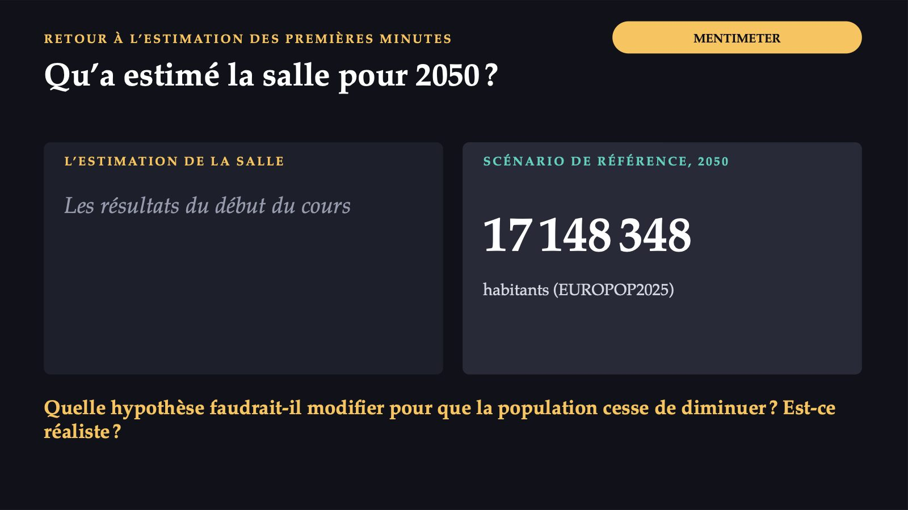
30 / 45La mortalité infantile
![NOUVEAU TERME 3 La mortalité infantile Combien d’enfants, sur mille nés vivants, meurent avant d’avoir un an. néonatale · les 28 premiers jours post-néonatale · de 28 jours à un an naissance un an Causes des décès néonatals, selon l’OMS (à l’échelle mondiale) : la naissance prématurée, les complications de l’accouchement (l’asphyxie et le traumatisme obstétrical), les infections néonatales, les anomalies congénitales. Causes des décès post-néonatals : ces notes n’ont pas de source qui les donne. La répartition des décès infantiles par cause, pour la Roumanie, n’a pas été extraite d’une source officielle.](diapozitive/C03/031.jpg) 31 / 45
31 / 45Quelle part des décès néonatals survient, selon l’OMS, au cours de la première semaine de vie ?
32 / 45La mortalité infantile : 1,9 fois la moyenne européenne
![LA ROUMANIE ET L’UNION EUROPÉENNE · 2024 La mortalité infantile : 1,9 fois la moyenne européenne Roumanie 6,6 Union européenne 3,5 SUR LES 6,6 DE LA ROUMANIE néonatale 3,7 post-néonatale 2,9 La composante post-néonatale représente près de la moitié du total. Qu’est-ce qui l’explique ? Les chiffres ne le disent pas : il faudrait la répartition des décès par cause et par lieu de survenue. En 2000 : 18,6. Baisse de 64,5 % jusqu’en 2024. Estimation de l’UN IGME (UNICEF, OMS) pour 2024 : 6,0, avec un intervalle d’incertitude de 5,7–6,3. Autre définition (probabilité de décès) et autre méthode (modèle statistique) : les deux valeurs ne s’utilisent pas ensemble dans une même comparaison. Source : Eurostat, mortalité infantile pour mille naissances vivantes (demo_minfind) ; UN IGME.](diapozitive/C03/033.jpg) 33 / 45
33 / 457,3
 34 / 45
34 / 45L’avortement : 458,3 en 2013, 206,8 en 2024
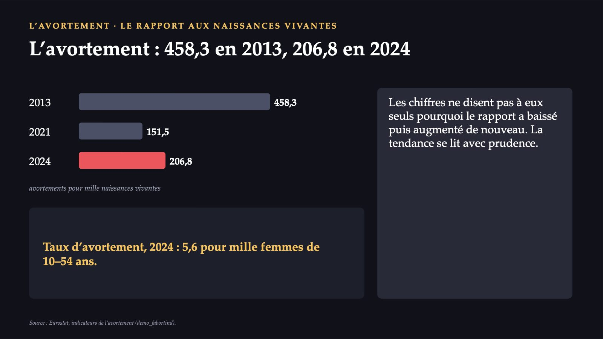
35 / 45Quelle part des naissances ont une mère de moins de 20 ans, en 2024 ?
36 / 459,5 %
 37 / 45
37 / 45La vaccination est descendue sous son niveau d’avant la pandémie
![DE LA NAISSANCE AU CABINET La vaccination est descendue sous son niveau d’avant la pandémie DTC3, 2019 88 % DTC3, 2025 66 % Rougeole 1, 2019 90 % Rougeole 1, 2025 66 % Rougeole 2, 2025 68 % La Roumanie est loin du niveau qu’elle avait avant la pandémie. La prématurité (OMS) : naissance avant 37 semaines complètes. À l’échelle mondiale, ses complications sont la principale cause de décès avant 5 ans ; les trois quarts de ces décès pourraient être évités. Les 1 000 premiers jours, de la conception à deux ans : leurs effets à long terme ne sont pas développés ici. Le lien avec les maladies chroniques de l’adulte : cours 4. Source : OMS et UNICEF.](diapozitive/C03/038.jpg) 38 / 45
38 / 45Un indicateur, une intervention au cabinet et une du système
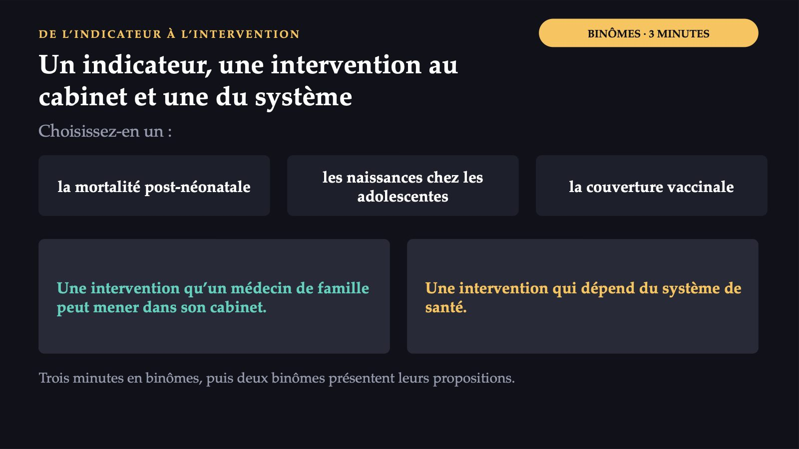
39 / 45VRAI
 40 / 45
40 / 45Vrai ou faux : les réponses
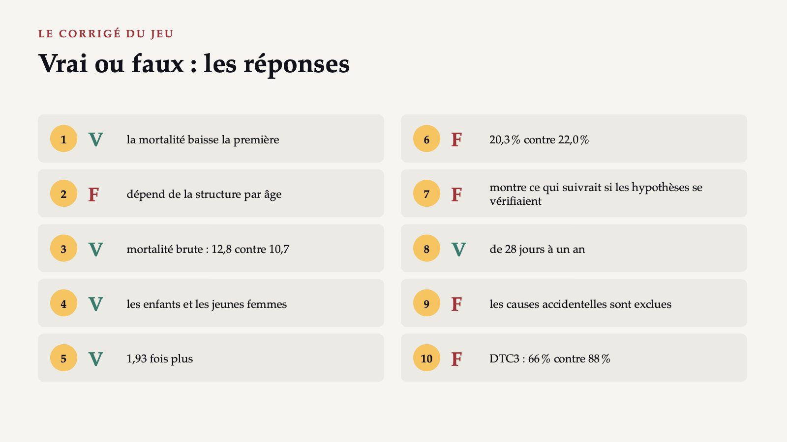
41 / 45La Roumanie et l’Union européenne, en bref
![EN UN SEUL ENDROIT La Roumanie et l’Union européenne, en bref Roumanie UE Indice synthétique de fécondité, 2024 1,39 1,34 Taux brut de natalité, 2024 7,5 7,9 Taux brut de mortalité, 2024 12,8 10,7 Personnes de 65+ (%), 2025 20,3 22,0 Rapport de dépendance des personnes âgées, 2025 31,6 34,5 Espérance de vie (ans), 2024 76,5 81,5 Mortalité infantile, 2024 6,6 3,5 Mères de moins de 20 ans (%), 2024 9,5 2,1 Lien avec le cours 2 : la charge de morbidité (DALY) confirme le stade des maladies chroniques. Source : Eurostat.](diapozitive/C03/042.jpg) 42 / 45
42 / 45Ce que vous ferez différemment, dès demain
![DÈS DEMAIN, EN TANT QUE MÉDECINS Ce que vous ferez différemment, dès demain 1 Lisez tout chiffre démographique avec son année, sa source et, pour les projections, le scénario. 2 Devant une mortalité infantile élevée, demandez quelle composante est élevée et quelles données par cause existent ; ensuite seulement, où les soins doivent être améliorés. 3 Chez chaque enfant, vérifiez le carnet de vaccination ; chez une adolescente enceinte, pensez à ses risques médicaux, à la contraception, à l’école et à sa sécurité. 4 Vos patients seront, dans vingt ans, plus âgés, moins nombreux et atteints de plus de maladies à la fois.](diapozitive/C03/043.jpg) 43 / 45
43 / 45Cinq idées du cours d’aujourd’hui
![À RETENIR Cinq idées du cours d’aujourd’hui 1 La transition démographique : d’une natalité et d’une mortalité élevées à faibles. 2 La transition épidémiologique : des infections aux maladies chroniques, aux âges avancés. 3 La Roumanie perd de la population : plus de décès que de naissances, et l’émigration. 4 Le vieillissement : plus de maladies chroniques, moins de personnes d’âge actif. 5 Les mortalités infantile et maternelle ont beaucoup baissé ; l’infantile reste près de deux fois supérieure à la moyenne de l’UE. La réponse au titre : une population plus petite et plus âgée a besoin d’un autre système de santé.](diapozitive/C03/044.jpg) 44 / 45
44 / 45Trois questions pour finir
45 / 45Flèches ou espace : navigation · O : vue d’ensemble · N : notes de l’intervenant · F : plein écran · Échap : fermer